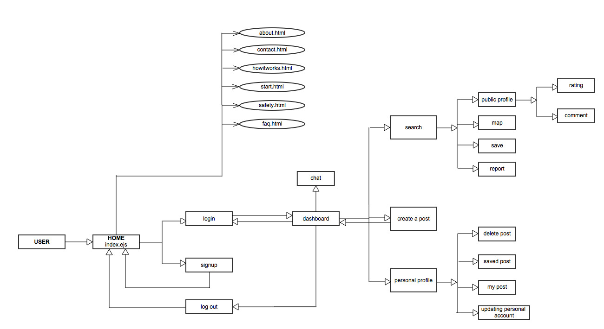

In recent years the demand for timely and cost-effective transportation has been increasing. Simultaneously the cost of transportation continues to rise as petrol becomes more and more expensive. These factors have lead to more and more people who are willing to carpool. Carpooling services are becoming very popular and as transport costs continue to rise, there is a huge market for such a service.
Our project CarNex, is a carpooling web service that helps to connect users together to facilitate carpooling. The site serves primarily as a place where users can post their travel plans and browse through other users’ posts on the website. In this way users can find people travelling to the same route and organize to share the cost of the trip. The CarNex service helps to facilitate this through various features such as chat and user profiles and tries to minimize the risk associated with arranging a carpool.[Appendix A]
We strongly believe that some of the advantages of using CarNex includes:
Hello, my name is Chuanrui Li. As an electrical and computer engineering student, I have long been interested in both software and hardware development industry and have several years’ experience of programming and project design.
What I have learned:
I learned how to use effective strategies to deal with a difficult team situation. One of our members dropped the course (Aliya Hameer) and one member left our team (Monica Li). By creating a standard and detailed roadmap, all the team members have a clear plan for next step and we increased our website development speed. Meanwhile, our team applied social computing skills to solve the hardest problems together and divided easier tasks for efficient progress.
I'm currently a student in the Engineering Science program at the University of Toronto. I'm very passionate about technology and I'm always excited by new gadgets and ideas.
What I have learned:
Having started this course with no web development experience I quickly learned a lot of details regarding the server and client side programming. I was amazed at the resources that were available from server frameworks to bootstraps to cloud hosted databases, all of which went a long way to making the project more manageable. I’m looking forward to playing around with these tools more in creating websites. It was a great experience to learn team dynamics and division of labour much as we would in a real work environment. While there were, of course situations with team conflict it was great to see how we had learned to work together by the end.
I just started a hobby which is programming on the web and I love it. My dream is to become a Sunday school teacher, successful entrepreneur and a philanthropist. Aside from computer science, I enjoy learning about how businesses start up and operate.
What I have learned:
I've studied, learnt and gained experience on how to build a sophisticated modern day web application from the scratch till completion. I learnt lots of new materials which include html5, CSS3, JavaScript, Nodejs, Mongodb,and I've also gained a huge insight of how databases and server side operates. More importantly, I learnt are how to make a web more efficient and scalable to multiply devices. I believe that this course has now made me a better computer scientist and I'm happy I took it.
| Task | Hours Planned | Team Member Assigned | Deadline Date | Hours Taken | Team Member Completed | Completed date |
|---|---|---|---|---|---|---|
| Security password encryption | - | Joel | July 29 | 5 | Joel | July 29 |
| A2 chatting system improvement | - | Joel | July 30 | 3 | Joel | July 30 |
| Performance Improvement by using heroku cloud service | 5 | Richard | July 29 | 6 | Richard | July 29 |
| Performance and security testing | 3 | Richard | July 30 | 3 | Richard | July 29 |
| Google charts | 6 | Chidi | Aug 4 | 8 | Richard and Chidi | Aug 4 |
| XSS security improvement | 6 | Joel | Aug 3 | 5 | Joel | Aug 3 |
| CSRF security improvement | 6 | Richard | Aug 1 | 7 | Richard | Aug 1 |
| GZip performance improvement | 4 | Richard | Aug 4 | 3 | Richard | Aug 2 |
| Js, css file minify and img size reduction | 1 | Richard | Aug 3 | 2 | Richard | Aug 3 |
| The user uniqueness validation | 8 | Joel | Aug 3 | 5 | Joel | Aug 3 |
| Report function | 3 | Richard and Chidi | Aug 5 | 3 | Richard and Chidi | Aug 2 |
| SMS verification | 8 | Joel | Aug 7 | 8 | Joel | Aug 7 |
| The final report | 6 | Chidi, Joel, and Richard | Aug 7 | 8 | Chidi, Joel, and Richard | Aug 7 |
| Task | Hours Planned |
|---|---|
| Intuitive navigation | 2 |
| Styling for the entire website | 3 |
| About Us | 2 |
| Homepage - clearly communicate project idea | 5 |
| How it Works (FAQ) | 4 |
| Sign up page | 2 |
| Log in dialog | 1 |
| Sample postings page | 4 |
| Contact Us form | 2 |
| Account settings | 5 |
| Compatibility across browsers and devices | 3 |
| W3 validation | 1 |
| Readme | 1 |
| Task | Hours Planned | Team Member Assigned | Deadline Date | Hours Taken | Team Member Completed | Completed date |
|---|---|---|---|---|---|---|
| User sign-up | 2 | Monica | July 14 | 6 | Joel and Richard | July 14 |
| User login | 1 | Monica | July 16 | 4 | Joel and Richard | July 16 |
| Change user settings | - | Monica | July 19 | 3 | Joel | July 19 |
| Posting an ad | 3 | Joel | July 15 | 4 | Joel | July 15 |
| Deleting/Unsaving ads | 2 | Joel | July 17 | 6 | Joel | July 17 |
| Saving ads | - | Joel | July 7 | 4 | Joel | July 17 |
| final editing for font-end and back-end | 9 | Richard | July 20 | 10 | Richard | July 20 |
| Searching posts for a particular route | 4 | Joel and Richard | July 15 | 8 | Joel and Richard | July 15 |
| Sorting of search results | 3 | Joel and Richard | July 15 | 2 | Joel and Richard | July 15 |
| View profile | - | Joel and Richard | July 17 | 5 | Joel and Richard | July 17 |
| Mapping routes | - | Monica | July 18 | 8 | Richard | July 18 |
| Implement the Contact Us form | 3 | Chidi | July 14 | 3 | Joel and Chidi | July 25 |
| users can contact each other(chat room) | 5 | Richard | July 21 | 10 | Richard | July 24 |
| Allow users to submit reviews | 5 | Joel and Richard | July 17 | 8 | Joel and Richard | July 21 |
| Rating system for users | 10 | Chidi | July 17 | 9 | Richard and Chidi | July 21 |
| Readme | 1 | Chidi | July 25 | 3 | Chidi | July 25 |
| A1 Improvements | 4 | Chidi | July 14 | 5 | Chidi | July 14 |
| Mutiple users socket.io connection | 5 | Richard | July 23 | 7 | Richard | July 25 |
| Task | Hours |
|---|---|
| Patch security vulnerabilities | 10 |
| Load/stress testing and improvement | 10 |
| Report on security/scaling | 5 |
| Readme | 1 |
All of the items in the product backlog were accomplished by A3.
| User Story | Story Points |
|---|---|
| As a user, I want to be able to easily view announcements about the service. | 1 |
| As a user, I want to be able to search for a particular route. | 3 |
| As a user, I want to be able to sort results of my search to easily view the postings that are most relevant to my needs. | 5 |
| As a user, I want to be able to contact a driver directly to negotiate a price and make arrangements for a trip. | 2 |
| Moderation of driver ads. | 3 |
| As a user, I want to see other users' ratings and reviews for a particular driver. | 3 |
| As a user, I want to be able to send feedback to the site owners. | 2 |
| As a driver, I want to be able to post an ad for a particular route I am taking. | 5 |
| As a user, I want my safety to be taken seriously. | 5 |
| As a user, I want to be able to rate my experience with a particular driver. | 5 |
| As a user, I want the website to be easy to navigate. | 7 |
| As a driver, I want to be able to delete my own posting. | 3 |
| As a user, I want to be able to chat with other users on the site. | 5 |
For A3, Chuanrui Li has done the performance and security testing, integrated local git repository with heroku cloud service, implemented CSRF form submission security, inserted GZip into network protocol to minimize the file size during transmission.
Joel modified existing errors in chatting system from A2, added password encryption, inserted XSS prevention to prevent malicious javascript submissions from attackers and implemented username validation as a firework between backend and database, to ensure that usernames were unique. He also finished the SMS verification system.
Chidi drew pie chart and line chart to indicate the performance improvement between A2 and A3. More importantly, he helped Chuanrui Li to edit final report and readme file.
From the load testing result, the html loading percentage is dramatically increased because we minified all the css, javascript and image file and their percentage is decreasing. Futhermore, instead of creating several javacript files and linking them in all html or ejs files, putting the script into html files and deleting the redundant javascript links decrease the precentage of javascript content loading. Additionally, the online image optimizer can save unnecessary loading bytes for each image without changing the quality or size of the image.
The loading speed incremented by 30% - 40%, specially for Google map API and images. The minified javascript and optimized images siginificantly increase get command speed
The site was streamlined to ensure that the DOM depth was reduced. The large expesive DOM structure that we used in A2 was reduced for A3.
The improvement aimed at file transmission speed:
Gzip compresses all the data sent between client and server, which saves almost 70% of origin page size.
Uncompressed Page Size: 5.1 KB
Compressed Page Size: 1.7 KB
Savings: 66.1%
Region: Virginia, Users: 1200, Methods: get, set, post and delete
Region: California, Users: 1200, Methods: get, set, post and delete
Region: Japan, Users: 1200, Methods: get, set, post and delete
Summary: As can be seen from the charts above, the most signifcant performance upgrades occur when there are more than roughly 100 users. With less than a 100 users the traffic is not enough for Gzip to be very effective at improving perfomance. However, when the user base exceeds 100 users there is a noticeable improvement in performance because the compressed data is much more compact than that amount of data would be if uncompressed.
The CSRF middleware enables that CSRF token inserted in every single form submission. When the user do the POST request, the CSRF middleware will intercept the request and compare _csrf parameter within the form submission with the value the CSRF middleware generated. If the attacker have invalid _csrf parameter, the CSRF middleware will return the HTTP 403 Forbidden status.
In this case, the attacker cannot access the user submission or provide some fake data into the database. However, the database will store many sessions for all submissions, which needs a large memory storage when user base increases.
XSS is a security vulnerability that allows an attacker to inject malicious javascript into the database by writing script rather than text in any input form. Data entered to the database was already defined to be as type string to prevent this sort of attack. Further protection was added through the xss module which parses every input and removes html tags before storing in the database. This effectively prevents attackers from storing any type of malicious code in the database, through the input fields.
Password encryption is a necessary security feature that protects user accounts from being hacked. Supposing an attacker were to gain access into the database, password encryption ensures that the attacker is unable to view the clear text password. Before every password is stored in the database it is encrypted using a bcrypt module hash function and stored with a randomly generated salt. When a user attempts to login the encrypted password is retrieved and its salt obtained. The attempted password is then hashed and salted and compared to the stored password. This method of password encryption ensures maximum difficulty in obtaining the clear text password. The salting defends against a common dictionary attack and the one way hashing functionality ensures that it is computationally impossible to determine the password.
SMS verification is an additional security feature that we added to ensure that users are inputting a valid phone number. When a user signs up a pin code is sent in a text message to the phone number provided. This ensures that at least the phone number is verifiable allowing law enforcement to follow up if the user should prove to be suspicious. The SMS is sent using the twilio node module from a number registered on the twilio site.
Login fucntionality was completed for A2. This ensures that only a logged in user can access certain pages containing personal information. For the login fucntion the passport middleware was used. Passport authenticates username password combinations stored in the database and allows the user session information to be stored. If false login information is provided the user will be redirected to the homepage and will be unable to acces the profile or dashboard pages. This ensures that user information is secure and only viewable to CarNex users and that personal information is only viewable by the user themselves.
There were a couple bugs that we had noticed from A2 and fixed for A3. Firstly, a bug was fixed where an incorrect username was used in the chatroom. Secondly, a bug was fixed where multiple posts displayed on the dashboard from same user, had different ratings. Thirdly, delete post function had an error where it would not work if the description string was too long. These three bugs were found as we were working on A3 and were fixed during this release.
Arranging a carpool can be time consuming alternative to public transit. It can be hard for passengers to find a matching driver immediately with the same departure date and destination. There are three approaches that we have made to avoid these limitations. First, all the users will have their own commonly commute area. Then people can easily view other people’s profile and find a matching pair. Second, we create a real time chatting room for all the users, once a request has been sent, all the online users can see it and give response to that request at once, which increases opportunities to find a carpooling on time. Third, we also have a search board for users to find relevant trips and check the map for detailed route information.
Additionally there is always an inherent risk involved when contacting strangers and meeting them in reality. We have taken several steps to ensure the safety of our customers. On sign up every phone number is verified by an SMS pin. The idea is that in the event of an emergency the mobile number provides a real starting place for police and other law enforcement to begin investigations. Additionally, every user can be reported by their fellow users. This closely monitored system ensures that any suspicious users are dealt with immediately by CarNex administration who will know the user’s history and who reported the user.
The detailed description and design architecture for CarNex
| Sample Username | Sample Password |
| Bruce | 123 |
| Peter | 123 |
| Sample Origin | Sample Destination |
| Toronto | Calgary |